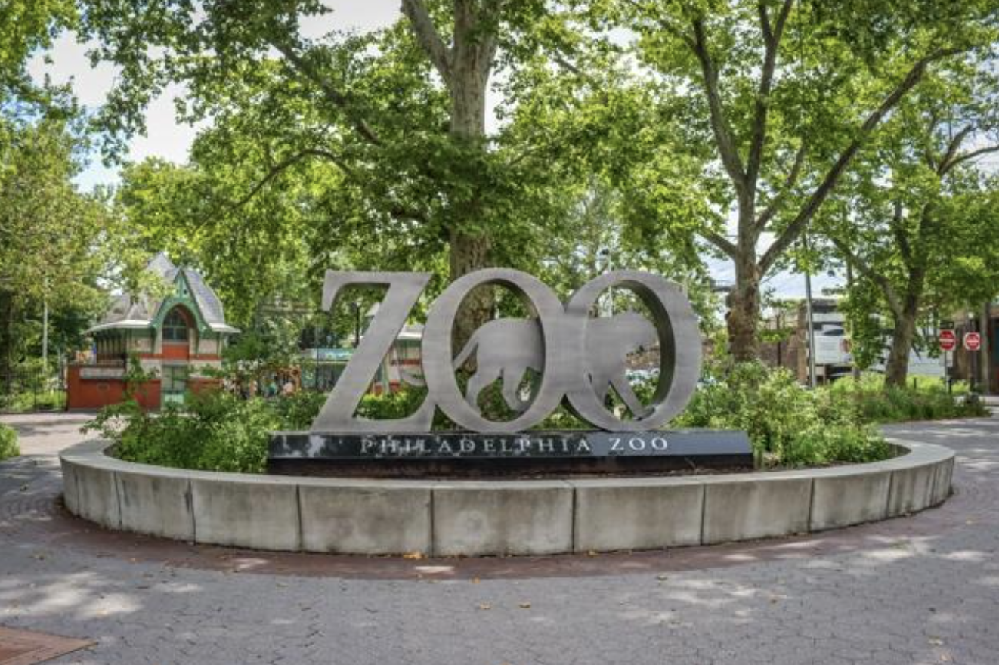
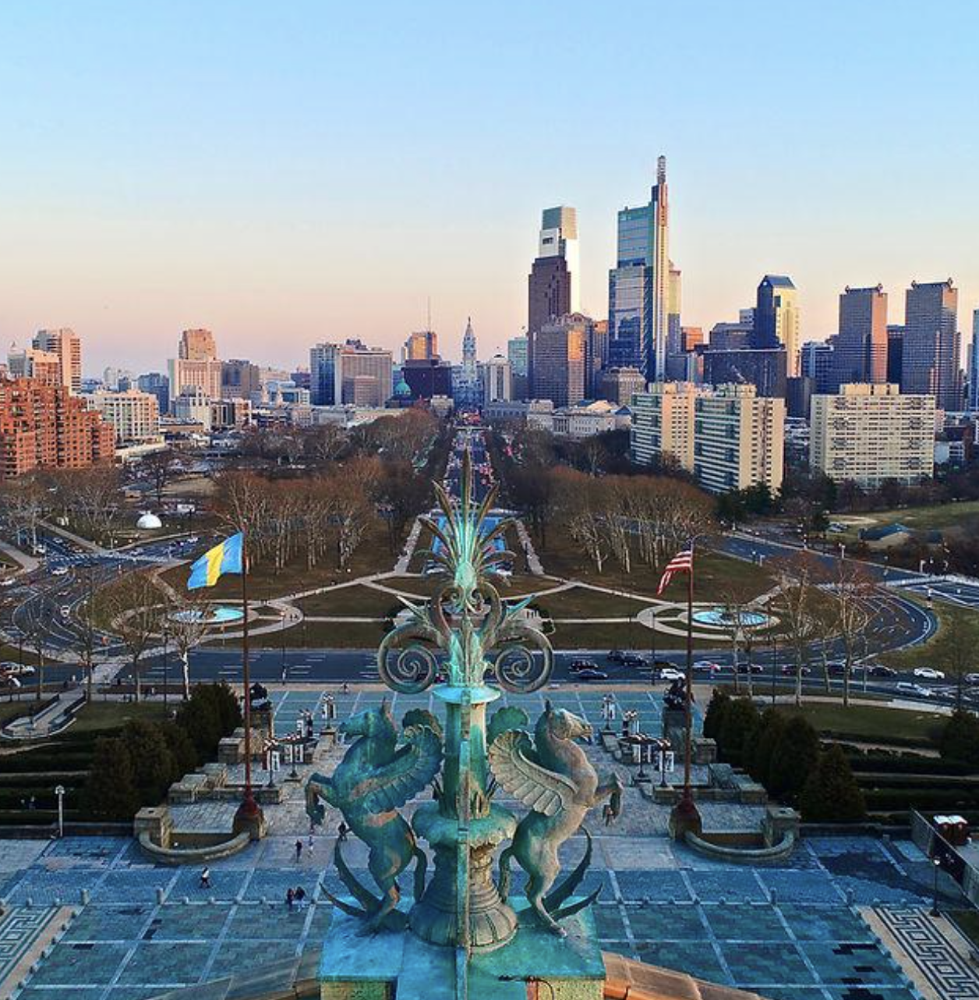
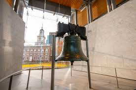

欢迎来到费城
欢迎来到美国，也欢迎来到宾大。很多中国学生到美国的第一站，就是费城国际机场。下飞机以后，你先要过海关、拿行李，然后再去学校或者住的地方。第一次来美国，大家可能会有一点紧张，可是不用担心，提前准备好材料就可以了。
从机场到宾大
从费城国际机场到宾大，有几种常用办法。第一种是坐 SEPTA 的 Airport Line。这个火车会停在机场的几个航站楼，也会去市中心。你可以先到 30th Street Station，再去宾大附近。第二种是坐出租车，或者用 Uber、Lyft 这样的打车软件。这样比较方便，可是一般比坐火车贵。第三种是请朋友、同学或者学长学姐来接你。
来美国第一天要注意什么
第一天到美国的时候，护照、签证、I 20 或 DS 2019、手机、钱包和学校地址都很重要，最好放在随身的包里，不要放进行李箱。手机最好提前充好电。你也可以先把学校老师、ISSS、室友或者朋友的联系方式保存好。这样到了机场以后，你会更安心。
费城是什么样的城市
费城是一个很有历史的城市，也有很多大学、博物馆、餐馆和体育活动。宾大在 University City，这里有很多学生，也有很多吃饭和学习的地方。费城市中心叫 Center City，从宾大过去很方便。周末的时候，你可以去看看城市风景，也可以去吃有名的费城食物。
到费城的时候、你可以看到很多的风景。费城动物园在校园的附近。十月、万圣节的派对很有趣：晚上公园的光很漂亮。

费城美术馆上、你可以看到Benjamin Franklin Parkway. 这里、旅人爱拍视频：高的楼很漂亮、常常跑步人在这里练习。


费城地图
下面这张地图可以帮助你快速了解费城、University City 和 Center City 的大致位置。
本周费城天气
出发前和每天出门前都可以看一下天气，提前准备衣服和雨具。
小提醒
美国的天气四季不一样。夏天可能很热，冬天可能很冷，还可能下雪。所以来费城以前，最好准备不同季节的衣服。第一天不要安排太多事情，先好好休息，第二天再慢慢开始熟悉新生活。